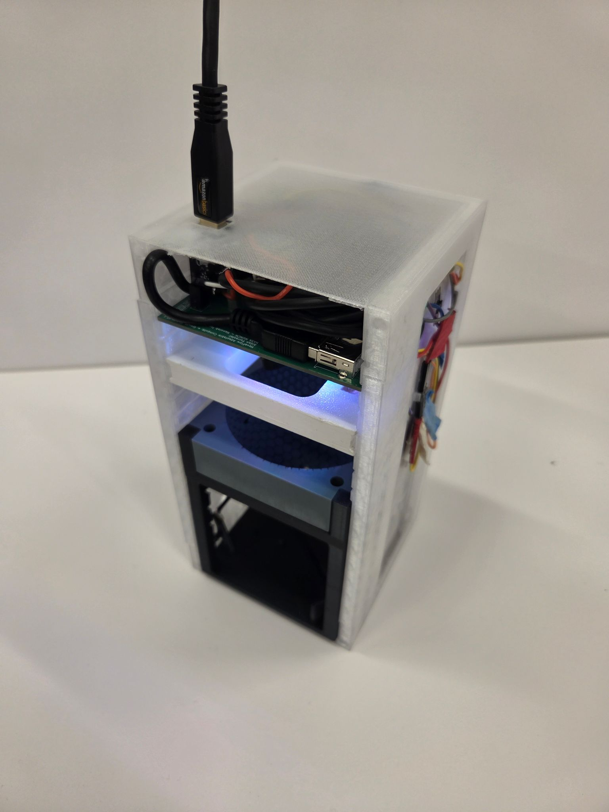
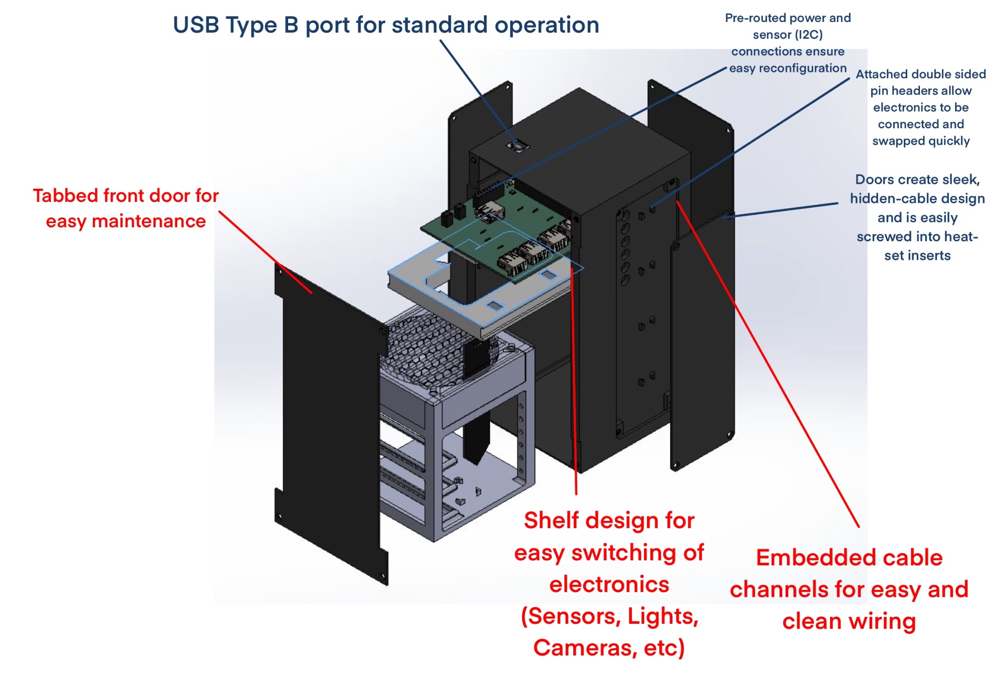
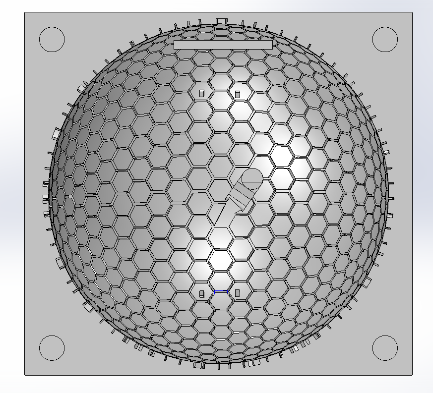
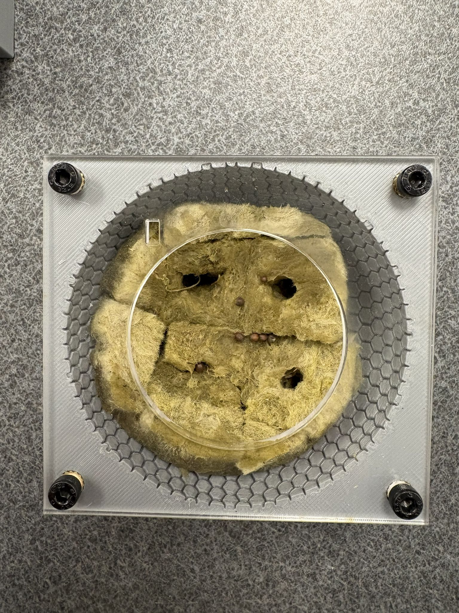
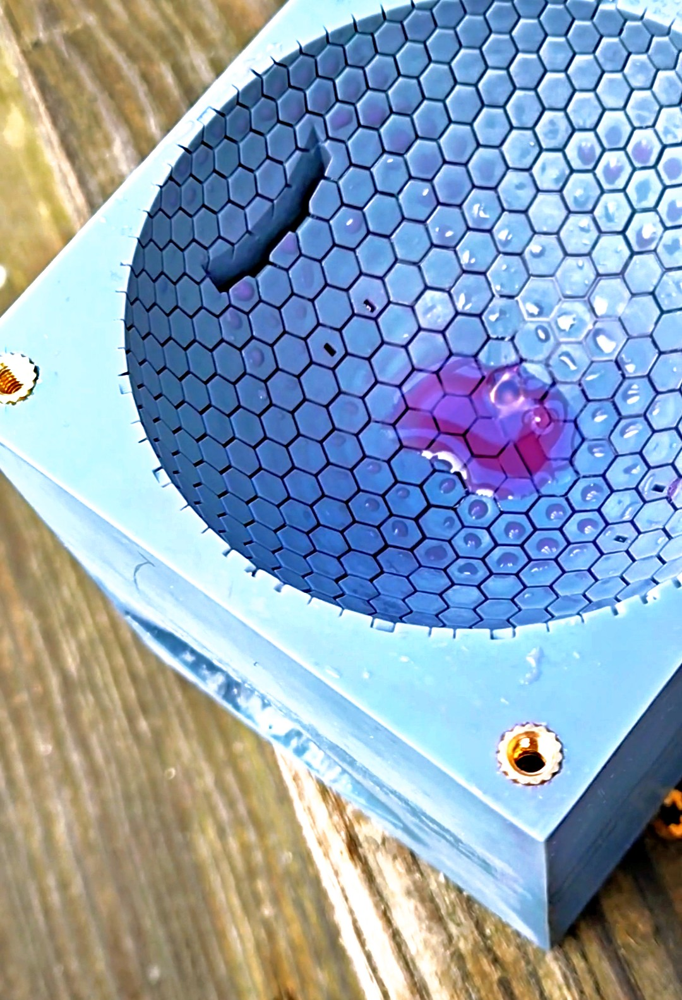
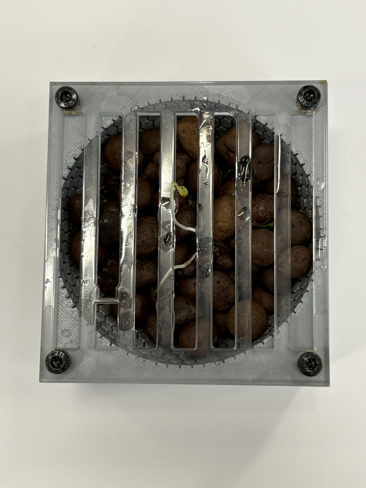
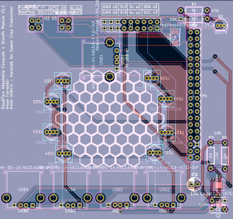

The design journey

Tri-County RVTHS · NASA HUNCH · Franklin, Massachusetts
Growing plants in microgravity, the way a thorny devil drinks
Hexagonal capillary channels copied from the thorny devil lizard, carrying water to plant roots where gravity can’t help. Inside a 2U nanolab, tested at the NASA Glenn 2.2-Second Drop Tower in Ohio.
Aidan, Nate, Sabrina, Maddie and Lucas in the Tri-County engineering shop. Photo: HexaFlow team.
The project
A pump-free way to get water to a root
HexaFlow is a modular capillary action nanolab that uses AI vision and biomimicry to deliver water to plants. A five-member team from Tri-County RVTHS built it inside a 2U enclosure, on a $100 budget, to prevent root rot while enabling interchangeable experiments and rapid data collection.
The hexagonal channels take their cue from the thorny devil lizard (Moloch horridus), which transports water through grooved skin by capillary action, no pump required. A vision model reads root moisture from the camera and drives the pump, closing a continuous feedback loop that prevents overwatering and root rot.
Manufacturing relies on SLA 3D printing in resin. Resin’s polar bonds grip water more tightly than water molecules grip each other, driving efficient capillary transport, strong enough that the system holds water even when inverted.
2.2s
NASA Glenn drop window, 2.2-Second Drop Tower, Ohio
14.7mm
Mean capillary rise, 9-drop Suite B on the 14-ft rig
0.48mm
Channel width (0.020 in gap)
10.12mL
Channel capacity, fully saturated
-
01
Sept 2025 · Problem
Define the box we had to build inside
NASA HUNCH gave us the rules: a 2U nanolab (20×10×10 cm), 5 V USB-A power, a $100 budget, and a water supply that has to be entirely mechanical, no pumps-for-everything. The problem was bigger than “grow a plant in space”: study how fluids and plant substrates behave in microgravity, to help feed long-distance spaceflight. Condensation couldn’t touch the sensors, everything had to be modular, and it needed a web interface.
-
02
Sept–Oct 2025 · Ideation
Read everything that came before
We reviewed NASA Veggie, the Advanced Plant Habitat, U-Michigan’s 3D-printed PLA substrate, MIT 2020 payloads, Astrobeat, and three patents. The gap was consistent: too big, not modular, water sources that drew power, not user-friendly. We pulled literature on capillary fluidics and soil-moisture sensors, and started logging everything in individual design notebooks (our “D.A.A.N.s”).
We emailed Dr. Gene Giacomelli and Dr. Murat Kacira (University of Arizona), Robert Morrow (NASA capillary fluidics), John Wetzel (Sierra Space), and Ariel Ekblaw (MIT Space Exploration Initiative). Not all of them wrote back, but the ones who did shaped the design.
-
03
Oct 22, 2025 · Ideation
From hydroponics to a thorny devil
Eight substrates went into testing in October. Nearly all of them grew mould; only pine bark produced any growth at all. On 22 October the team abandoned growing media entirely and went aeroponic. Then Sabrina found the thorny devil lizard (Moloch horridus) on asknature.org: its grooved skin moves water by capillary action, no pump needed.
Nate prototyped the “Moloch Horridus Water System” in SolidWorks in two sizes. It worked “miraculously well,” so we renamed the core the TDC, Thorny-Devil Capillary.
-
04
Nov 18–19, 2025 · Design
NASA liked the hex. Then pushed us.
At Preliminary Design Review, NASA’s reviewer called the hexagonal shape and thorny-devil method “terrific.” The feedback that reshaped the build: reposition the camera to capture fluid dynamics, not plant growth (the test is too short to grow anything); use food coloring to see the water; add 1–2 containment layers; and test at least two substrates. Peer teams warned wicking doesn’t work in microgravity.
-
05
Dec 15, 2025 · Design
Choosing the substrates on purpose
We scored four substrates on system compatibility, microgravity feasibility, and modularity. Rockwool won: it screws into existing holes, its binding agent won’t escape into the channels, and water moves through it better in microgravity. Clay pebbles won as the second pick (11.5 mm pebbles can’t enter the 0.48 mm channels).
Pine bark was rejected, because fragments would clog the channels. Illite was rejected, because the fine powder would escape and force a redesign.
-
06
Dec 2025–Feb 2026 · Iterate
Seven shells, a removable reservoir, and a lesson about resin
We iterated the enclosure seven times: wire holes 5 mm to 8 mm, walls 4 mm to 2 mm, door screws M3 16 mm to 4 mm, half-slotted modules that kept falling off the rails until we added supports. The reservoir became removable to stop moisture contaminating the electronics: a heat-sealed pouch in a friction-fit pocket.
Then our new resin printer’s VOCs shriveled the test plants overnight, a sharp lesson that emissions and biology don’t share a room. The kale kept dying, and the cause turned out to be the team’s own printer, running unventilated in the same room. Fix: move the plants, tent them, ventilate.
-
07
Jan–Mar 2026 · Test
Drop, measure, repeat, nine times
We dropped the TDC from 14 feet, with dyed water, measuring the water radius before and after each drop: about 0.9 seconds of free-fall per drop. Two suites were run: six drops first, averaging about 9.9 mm of capillary movement; then nine more after the module was revised, averaging 14.7 mm, a 48% improvement. The spread across the nine ran from 4.28 mm to 31.79 mm.
We stopped trusting the sim and started dropping the real thing.
-
08
Feb 9, 2026 · Iterate
Roots-through-rockwool fix
A later learning: clay pebbles and rockwool must stay continuously damp to wick water, which is impractical in microgravity, where wetting is intermittent at best. The team’s fix was to thread the roots through the bottom of the rockwool so they reach the nutrient water directly, sidestepping the wicking problem entirely.
Takeaway: the substrate anchors the plant and is part of the water-delivery path.
-
09
Spring 2026 · Build
The vision model closes the loop
By Critical Design Review the system was whole: TDC capillary channels, dual pumps (1 mL/min for the long term, 100 mL/min for the drop test), a Raspberry Pi Zero 2W running an AI vision model, aeroponics plus rockwool and clay pebbles, and a modular shelf enclosure. The vision model reads root moisture and waters only when the roots are dry.
The honest open items: a custom PCB to replace the wiring, waterproofing, and a live-plant run. A geometry problem caught only at assembly: the Atlas Scientific pH probe is 153 mm, and we had 47 mm of clearance. The kind of thing that only shows up when you build it.
01 / 09









The substrate holds the plant and carries its water.
Adapted from the design journey, February 9, 2026
The people
Five students, one nanolab
Tri-County RVTHS, Franklin, Massachusetts, through NASA HUNCH.
- AidanProject Manager & Hardware Lead
- NateCorrespondent & Water Movement Lead
- SabrinaNote Taker & Substrate Lead
- MaddieScheduler & Modularity Lead
- LucasWeb Development Lead
Continue reading